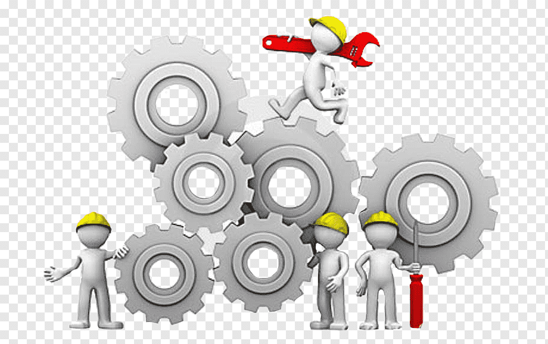
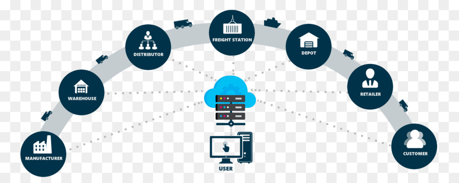

TEKNIK INDUSTRI
What is Teknik Industri?
Teknik Industri adalah jurusan kuliah yang menggabungkan bidang ilmu teknik dengan ilmu manajemen. Itu sebabnya, jurusan ini sangat cocok untuk lulusan IPA yang senang berbisnis, atau yang punya mimpi untuk bisa memimpin sebuah perusahaan industri yang besar. Bukan hanya mempelajari seluk-beluk mesin manufaktur, jurusan ini juga akan mempelajari perencanaan dan pengendalian produksi pabrik, mulai dari manajemen keuangan, operasional, hingga manajemen sumber daya manusia.
Jurusan Teknik Industri merupakan salah satu jurusan yang tidak pernah sepi peminat karena beberapa alasan berikut:
- Belajar lintas ilmu, memperkuat kompetensi diri seseorang.
- Peluang kerja luas di berbagai bidang.
- Memiliki modal pengetahuan untuk membangun usaha bisnis mandiri.
Kompetensi dasar yang akan kamu dapat setelah kamu melewati masa perkuliahan ialah mampu menilai efektivitas dan efisiensi sistem yang sudah ada, melakukan peningkatan kinerja dan mutu dengan menggunakan prinsip-prinsip teknik industri. Tidak hanya dibekali dengan prinsip dan isu terkini di bidang teknik industri, mahasiswa juga akan melakukan penelitian, pengumpulan data, interpretasi dan analisis dampaknya terhadap aspek ekonomi, lingkungan, dan sosial.

Peluang, jenis, dan jenjang karier yang menanti lulusan Teknik Industri sangat banyak dan bervariasi. Inilah beberapa pilihan & prospek karier bagi lulusan Teknik Industri:
- Pengembang produk
- Manajemen Tenaga Kerja
- Supply Chain & Operation Control
- Manajemen & Perancangan Distribusi
- Pengendali Kualitas
- Perancangan Produksi
- dll.
Salah satu mata kuliah yang akan dipelajari di bidang teknik industri ialah Pengantar Teknik Industri.
Pengantar Teknik Industri
Mata kuliah ini dirancang untuk memberikan gambaran secara garis besar disiplin teknik industri dan perkembangannya. Beberapa mata kuliah yang mendasari bidang keahlian teknik industri dipaparkan dalam pengantar teknik industri secara garis besar seperti pengukuran waktu kerja, tata letak pabrik, penelitian operasional, ekonomi teknik, pengendalian kualitas termasuk juga manajemen personalia.
Materi pembahasan dalam pengantar teknik industri meliputi sejarah teknik industri, pemahaman teknik industri, dan ruang lingkup teknik industri..
Sejarah Teknik Industri
Sejarah teknik industri dimulai pada akhir abad ke-18 dan awal abad ke-19 selama Revolusi Industri di Inggris. Perubahan ekonomi dan teknologi yang terjadi pada masa itu mempengaruhi sistem produksi yang sebelumnya didominasi oleh kerajinan tangan dan membuat munculnya industri modern. Pada masa ini, kebutuhan akan peningkatan efisiensi dan produktivitas di pabrik-pabrik mengarah pada penggunaan mesin dan metode kerja yang lebih terstruktur.
Pada tahun 1900-an, seiring dengan berkembangnya teknologi dan munculnya konsep manajemen ilmiah, teknik industri semakin menjadi disiplin ilmu yang terpisah. Pada awalnya, fokus utama teknik industri adalah meningkatkan efisiensi proses produksi, terutama dalam industri manufaktur. Teknik industri juga mulai mengintegrasikan prinsip-prinsip manajemen seperti perencanaan, pengorganisasian, pengendalian, dan pengawasan.
sejarah singkat teknik industri meliputi perkembangan dari fokus pada efisiensi dan perbaikan operasional di industri manufaktur hingga pengintegrasian prinsip-prinsip manajemen, penerapan teknologi informasi, dan perluasan ke berbagai sektor. Teknik industri terus beradaptasi dengan perubahan lingkungan industri dan teknologi untuk memenuhi tuntutan perkembangan global.
Pemahaman Teknik Industri
Pemahaman teknik industri melibatkan beberapa konsep dan prinsip dasar. Berikut adalah beberapa poin penting dalam pemahaman teknik industri:
- Peningkatan Produktivitas: Teknik industri bertujuan untuk meningkatkan produktivitas melalui perancangan sistem yang efisien. Hal ini melibatkan analisis dan perbaikan proses produksi, pengelolaan rantai pasok, perencanaan produksi, pengaturan tata letak pabrik yang efisien, dan penggunaan teknologi terkini.
- Manajemen Operasi: Teknik industri melibatkan penggunaan prinsip-prinsip manajemen untuk mengoptimalkan operasi industri. Ini meliputi perencanaan produksi, pengendalian inventaris, penjadwalan produksi, pengawasan kualitas, manajemen risiko, manajemen logistik, dan pengelolaan sumber daya manusia.
- Perancangan Sistem: Teknik industri berfokus pada perancangan sistem yang efisien dan efektif. Hal ini melibatkan analisis dan perbaikan sistem produksi, sistem pengiriman, sistem pengolahan informasi, sistem distribusi, dan sistem manajemen.
- Ergonomi dan Kesehatan Kerja: Pemahaman teknik industri juga mencakup perhatian terhadap faktor manusia dalam sistem kerja. Ergonomi dan kesehatan kerja menjadi penting untuk memastikan kondisi kerja yang aman, nyaman, dan produktif bagi pekerja.
Contoh gambaran untuk bidang supply chain

Contoh gambaran untuk bidang PSKE
Ruang Lingkup Teknik Industri
Teknik Industri adalah cabang ilmu teknik yang berfokus pada perancangan, pengembangan, dan perbaikan sistem yang melibatkan manusia, mesin, bahan, dan energi untuk mencapai efisiensi dan efektivitas dalam operasi industri. Tujuan utama dari teknik industri adalah meningkatkan produktivitas, kualitas, keamanan, dan keberlanjutan dalam lingkungan kerja industri.
Ruang lingkup teknik industri melibatkan berbagai aspek dalam perancangan, pengembangan, dan perbaikan sistem di berbagai sektor industri. Berikut adalah beberapa bidang utama yang termasuk dalam ruang lingkup teknik industri:
- Perancangan dan Tata Letak Pabrik: Teknik industri terlibat dalam perancangan tata letak pabrik yang efisien. Ini mencakup penempatan mesin, peralatan, dan sumber daya manusia secara optimal untuk memaksimalkan produktivitas, meminimalkan waktu dan biaya produksi, serta meningkatkan aliran material dan proses produksi.
- Manajemen Rantai Pasok: Ruang lingkup teknik industri juga mencakup manajemen rantai pasok, yang melibatkan perencanaan, pengendalian, dan pengelolaan aliran material, informasi, dan layanan dari pemasok hingga konsumen. Tujuannya adalah memastikan pasokan yang lancar, efisien, dan responsif terhadap permintaan pasar.
- Manajemen Produksi: Teknik industri terlibat dalam manajemen produksi yang meliputi perencanaan produksi, penjadwalan, pengawasan, dan pengendalian operasi produksi. Ini melibatkan penggunaan metode dan alat manajemen untuk mengoptimalkan penggunaan sumber daya, meningkatkan produktivitas, meminimalkan waktu henti, dan meningkatkan kualitas produk.
- Analisis dan Perbaikan Proses: Ruang lingkup teknik industri mencakup analisis dan perbaikan proses produksi. Ini melibatkan identifikasi dan pemodelan proses, analisis kinerja, identifikasi masalah, dan pengembangan solusi untuk meningkatkan efisiensi, kualitas, dan kehandalan proses.
- Manajemen Kualitas: Teknik industri terlibat dalam manajemen kualitas, yang mencakup pengembangan sistem kontrol kualitas, perancangan inspeksi dan pengujian, pengendalian statistik proses, dan penerapan prinsip-prinsip Six Sigma dan Lean Manufacturing untuk meningkatkan kualitas produk dan layanan.
- Manajemen Logistik: Ruang lingkup teknik industri juga meliputi manajemen logistik, yang melibatkan perencanaan, pengendalian, dan pengelolaan aliran barang dan jasa dari poin awal hingga poin akhir. Ini mencakup manajemen persediaan, distribusi fisik, transportasi, pengemasan, dan penyimpanan yang efisien.
- Ergonomi dan Desain Pekerjaan: Teknik industri juga mempertimbangkan aspek ergonomi dan desain pekerjaan yang baik. Hal ini melibatkan analisis dan perancangan lingkungan kerja yang ergonomis, perangkat kerja yang sesuai, tata letak yang memperhatikan kenyamanan dan keamanan pekerja, serta perencanaan tugas yang efektif.
- Manajemen Proyek: Ruang lingkup teknik industri mencakup manajemen proyek, yang melibatkan perencanaan, pengorganisasian, pengendalian, dan pengawasan proyek industri. Ini melibatkan penjadwalan proyek, alokasi sumber daya, manajemen risiko, pengendalian biaya, dan pengelolaan tim proyek.